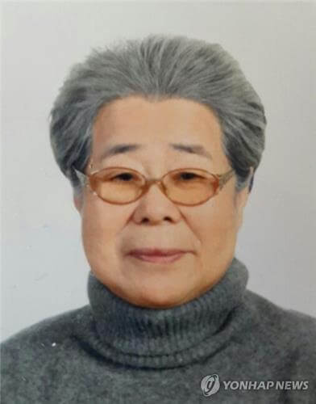

This page is dedicated to Yoo Hee-nam, who has dedicated her life to demanding redress and official apology from Japan for the military sexual violence that affected over 200,000 women during World War II.
Yoo Hee-nam was born in 1927 and passed away in 2016.Yoo Hee-nam died at the National Medical Center in Seoul due to lung cancer, the House of Sharing said.
Yoo was captured by Japanese soldiers at age 15 and brought to a brothel in Shimonoseki, Japan, before being tortured by soldiers there for a year. While Yoo was in the process of being moved to Singapore, the Japanese surrendered, and she returned home with the help of an Osaka resident. The organization that runs the shelter for former sex slaves, euphemistically called comfort women, on the outskirts of Seoul added Yoo's death and lowered the number of known survivors to 40 among the 238 victims who are registered in the South Korean database.